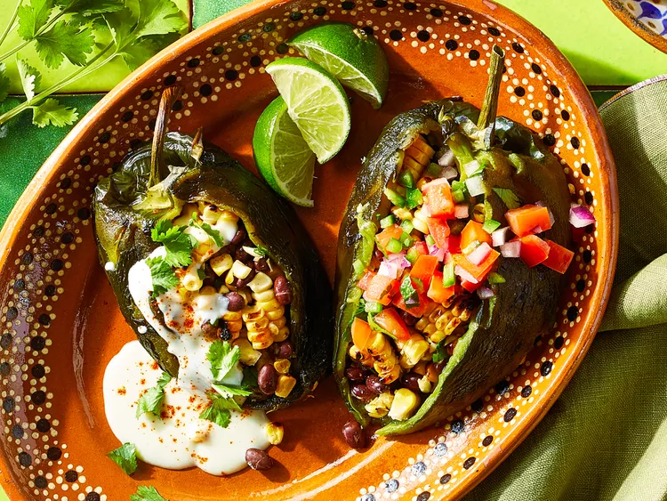

Meemaw's Grilled Stuffed Potatoes

Reviews
The recipe is very easy to follow and tastes great!
Both my wife and I enjoyed it.I did change out the AP flour for Coconut
flour - still was great!
But being the first time cooking Poblano
peppers I found they had an unfortunate tendency to split totally in two
or three lobes when washing.
I thought the corn and black bean combo was spot on.
One was plenty for me...though my teenage son ate two.
I topped it
with cheese rather than make the sauce. It's a great base recipe.
I used chopped up sausage but could also see using chicken. Thank you.
Ingredients(Some)
- 8 poblano peppers
- 5 ears corn, husks and silks removed
- 1 (15-ounce can) no-salt-added black beans, drained and rinsed
- 1 cup shredded pepper Jack cheese
-
cilantro leaves, lime wedges, and/or radish slices, for serving
(optional)
- 1 cup milk
Steps
-
Prepare an outdoor grill for indirect grilling, lighting burners on just
one side or pushing lit coals to one side. Preheat to medium-high heat
(375 to 400 degrees F (180 to 200 degrees C)). Lightly oil grill grates
over lit side.
-
Grill poblanos and corn, covered, turning occasionally, until poblano
skins and corn are charred, about 10 minutes. Keep grill lit
-
Transfer poblanos to a large bowl, cover, and let stand for 10 minutes.
Meanwhile, let corn stand until cool enough to handle; cut kernels from
cobs.
-
Remove and discard poblano skins, keeping stems intact. Make a
lengthwise slit down one side of each poblano, starting at stem and
being careful not to cut through to other side. Remove and discard seeds
and membranes.
-
Stir together beans, corn kernels, cilantro, oregano, garlic, salt,
cumin, and black pepper in a large bowl. Spoon about 1/2 cup bean
mixture into each pepper, enclosing pepper around the filling.
-
For the cheese sauce, melt butter in a small saucepan over medium-low
heat; whisk in flour. Cook, stirring until lightly browned, 1 to 2
minutes. Whisk in milk; simmer, stirring, until slightly thickened, 2 to
3 minutes. Gradually whisk in cheese until melted. Remove from heat and
keep warm, stirring occasionally.
-
Lightly oil grill grate over unlit side of grill. Grill stuffed
poblanos, covered, until filling is heated through, 5 to 7 minutes.
-
Serve immediately with cheese sauce; pico de gallo; and (if using)
cilantro, lime wedges, and/or radishes. Garnish with chili powder.